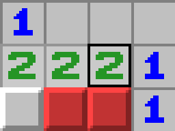
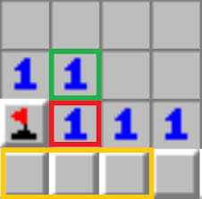
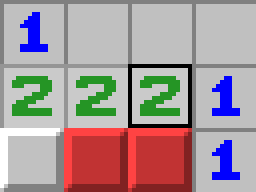
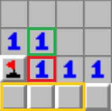

Main information
Minesweeper is a logic puzzle video game genre generally played on personal computers. The game features a grid of clickable tiles, with hidden "mines" dispersed throughout the board. The objective is to clear the board without detonating any mines, with help from clues about the number of neighboring mines in each field. Variants of Minesweeper have been made that expand on the basic concepts, such as Minesweeper X, Crossmines, and Minehunt. Minesweeper has been incorporated as a minigame in other games, such as RuneScape and Minecraft's 2015 April Fools update. The origin of Minesweeper is unclear. According to TechRadar, the first version of the game was 1990's Microsoft Minesweeper, but Eurogamer states Mined-Out (1983) by Ian Andrew was the first Minesweeper game. Curt Johnson, the creator of Microsoft Minesweeper, acknowledges that his game's design was borrowed from another game, but denies that it was Mined-Out.

How to play
Minesweeper is a puzzle video game. In the game, mines are scattered throughout a board, which is divided into cells. Cells have three states: unopened, opened and flagged. An unopened cell is blank and clickable, while an opened cell is exposed. Flagged cells are those marked by the player to indicate a potential mine location. A player selects a cell to open it. If a player opens a mined cell, the game ends. Otherwise, the opened cell displays either a number, indicating the number of mines vertically, horizontally or diagonally adjacent to it, or a blank tile (or "0"), and all adjacent non-mined cells will automatically be opened. Players can also flag a cell, visualised by a flag being put on the location, to denote that they believe a mine to be in that place. Flagged cells are still considered unopened, and a player can click on them to open them. In some versions of the game when the number of adjacent mines is equal to the number of adjacent flagged cells, all adjacent non-flagged unopened cells will be opened, a process known as chording.

Rules
Minesweeper is a game where you try to uncover every safe square on a grid while avoiding hidden mines. Each time you click a square, it either reveals a mine, which ends the game, or a number that shows how many mines are touching that square. By using these numbers, you can figure out which nearby squares are dangerous and which are safe. You can mark squares you believe contain mines with flags so you do not open them by mistake. The game is won when all the safe squares have been revealed and no mines have been clicked.
- - - - - - Difficulty levels - - - - - -
Beginner mode is usually on an 8x8 or 9x9 board containing 10 mines, Intermediate is usually on a 16x16 board with 40 mines and expert is usually on a 30x16 board with 99 mines; however, there is usually an option to customise board size and mine count.
Tips AND strategies
A game of Minesweeper begins when the player first selects a cell on a board. In some variants the first click is guaranteed to be safe, and some further guarantee that all adjacent cells are safe as well. During the game, the player uses information given from the opened cells to deduce further cells that are safe to open, iteratively gaining more information to solve the board. The player is also given the number of remaining mines in the board, known as the minecount, which is calculated as the total number of mines subtracted by the number of flagged cells (thus the minecount can be negative if too many flags have been placed). To win a game of Minesweeper, all non-mine cells must be opened without opening a mine. There is no score, but there is a timer recording the time taken to finish the game. Difficulty can be increased by adding mines or starting with a larger grid. Most variants of Minesweeper that are not played on a fixed board offer three default board configurations, usually known as Beginner, Intermediate, and Expert, in order of increasing difficulty. Beginner is usually on an 8x8 or 9x9 board containing 10 mines, Intermediate is usually on a 16x16 board with 40 mines and expert is usually on a 30x16 board with 99 mines; however, there is usually an option to customize board size and mine count.
 


